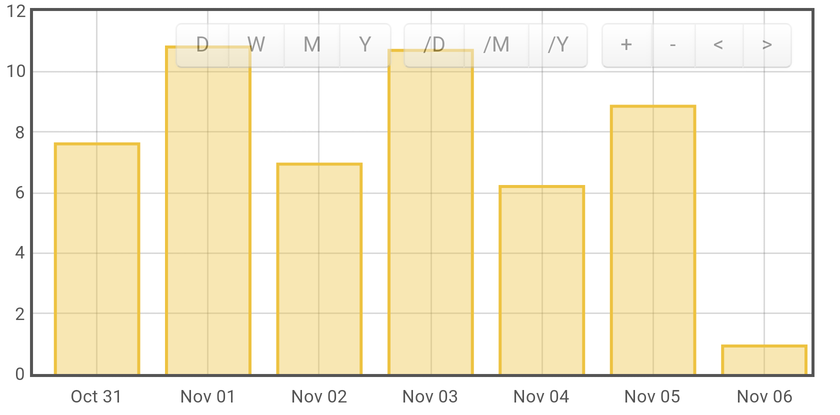

Hello,
I use Emoncms for one year and I find it very nice …
I use the version V8.3.2 (install with apt-get) of a Raspberry … Yet I do the update of the version 9 RC2 | 2015.09.15
The feed” kwh/d” work normally in the version V8.3.2., since the update, my feed kwh/d are inactive … The DataType of my feed PHPTIMESERIES and PHPFINA.
All the others feeds work normally in the new version … Can you help me?
Thanks,
Re: kWh/d inactive after update 9RC2
I'm currently using version v9.1 2015.11.02 and the process works fine here.
Paul

Re: kWh/d inactive after update 9RC2
Thanks for yo repply,
I test the new version 9.1 | 2015.11.02 but it don't work for me ... I have the same problem ...
Re: kWh/d inactive after update 9RC2
Hi,
I try with the version 8.5.2 | 2015.07.20 ... all my feed are Ok.
What must I do to have the feed "kwh/d" in the new version 9.X ?
Re: kWh/d inactive after update 9RC2
What have you tried to fix it? Have you checked your emoncms log,
What happens if you create a new feed based upon the kWh/d processor
Paul
Re: kWh/d inactive after update 9RC2
With the version 9RC2, I make a new database with only one input who was increment with a jon request. Of this input I take two feed : "log to feed" and "kwf to kwh/d".
The feed "log to feed" is active and I can see the value ... the feed " kwf to kwh/d" is inactive and I have not value.
Re: kWh/d inactive after update 9RC2
As per my previous post, have you checked your emoncms log?
Also check your folder/file permissions for your Phpfina data folder.
Re: kWh/d inactive after update 9RC2
Hi,
I check the emoncms.log. I find no entry of my “Kwh to kwh/d” feed …
The log to feed => the Phpfina feed are update
The kWh to kwh/d => the PHPTIMESERIES feed are inactive.
I check the permission:
24580 drwxr-xr-x 2 www-data root 4096 Nov 7 07:41 phpfina
24579 drwxr-xr-x 2 www-data root 4096 Nov 7 08:05 phpfiwa
24581 drwxr-xr-x 2 www-data root 4096 Nov 10 08:46 phptimeseries
PS : Sorry for the late response
Re: kWh/d inactive after update 9RC2
My Config :
Emoncms Version 9.1 | 2015.11.02
Server OS Linux 3.4.103
Host bananapi bananapi (192.168.0.20)
HTTP Server Apache/2.4.10 (Debian) HTTP/1.1 CGI/1.1 82
Database Version MySQL 5.5.44-0+deb8u1
PHP Version 5.6.13-0+deb8u1 (Zend Version 2.6.0)
Modules Core date ereg libxml openssl pcre zlib bcmath bz2 calendar ctype dba dom hash fileinfo filter ftp gettext SPL iconv mbstring session posix Reflection standard shmop SimpleXML soap sockets Phar exif sysvmsg sysvsem sysvshm tokenizer wddx xml xmlreader xmlwriter zip apache2handler PDO curl dio json mcrypt mysql mysqli pdo_mysql redis mhash Zend OPcache
Re: kWh/d inactive after update 9RC2
Have the same problem, the kwh/d do not update.
Did you find the problem?
Re: kWh/d inactive after update 9RC2
Chaveiro committed a fix for 'Fix kwh on emoncms update' a few days ago which has not been merged to the v9.1 branch as yet, but is merged to the 9.x branch.
But don't think it will sort your issue, as I think that it was a fix for the 'power to kwh' process feed dropping in value on update.
So just to recap, have you;
Paul
Re: kWh/d inactive after update 9RC2
Hi,
No I have not solution to this problem ... for yet I use my old version V8.3.2 !!
To Paul : I will test the 9.x again ...
But during, my fisrt test, I have make this action :
Selected your correct time zone in Setup > My Account YES
Updated your database in Setup > Administration YES
Created a new settings.php file from default.settings.php when you updated YES
Checked the 'input' process list for that feed to make sure that all looks good YES
I will change my version from Emoncms Version 9.1 | 2015.11.02 ... but Paul what is exactly the version I must test ? (have you the good link?)
Thanks
Re: kWh/d inactive after update 9RC2
9.1 is the current stable release, 9.x branch is a development branch which contains the latest fix from Chaveiro.
Paul
Re: kWh/d inactive after update 9RC2
Think i got it all set.
Used the default.setting.php from 9x copy to setting.php edit with path and sql info
Re: kWh/d inactive after update 9RC2
I test install the 9x
Used the default.setting.php from 9x copy to setting.php edit with path and sql info
Selected my time zone in Setup
Updated your database in Setup
And it doesn't work ... my feed are inactive
Re: kWh/d inactive after update 9RC2
I've just installed emoncms v8.5.2 from scratch on a second pi, and want to build up the feed data for a while before updating it to v9.0 later this evening. I'll report back how it goes, and document the steps taken as well.
Paul
Re: kWh/d inactive after update 9RC2
Hhhm, not gone as planned! There are issues here (but you know that!)
Paul
Re: kWh/d inactive after update 9RC2
Hello,
I make my update step by step …
So I test all versions from 8.3.1 to 9.
My graph Kwh/d work normally in the version :
8.3.1
8.3.3
8.3.6
8.4
Every day, I change the version and if all is Ok, I make the update of the next version …
Today I will check the version 8.5.
I will post the result of my test …
Re: kWh/d inactive after update 9RC2
Stephane, did you see my update post http://openenergymonitor.org/emon/node/11636
Paul
Re: kWh/d inactive after update 9RC2
Thanks, I have look it ...
Today, I test the version 8.5.2 | 2015.07.20 and all mind Ok.
So for the next update to the version 9, I will use your process.
Re: kWh/d inactive after update 9RC2
Hi,
I have update my Emoncms to 8.5.2 ... all war feed are OK
And today I test your update from 8.5.2 to 9 (post http://openenergymonitor.org/emon/node/11636) but my feed "kwh/d" are inactive :-(
I find nothing in the log ...
Re: kWh/d inactive after update 9RC2
Inactive, or have they reset to zero?
Re: kWh/d inactive after update 9RC2
Inactive !!
Re: kWh/d inactive after update 9RC2
See this screenshot !!